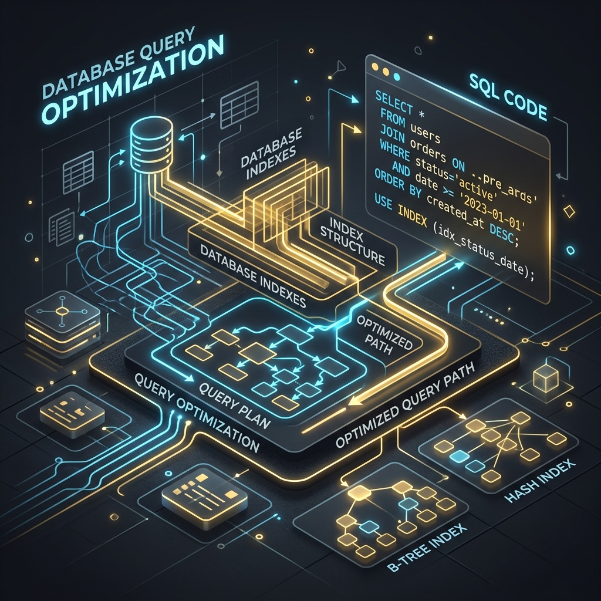
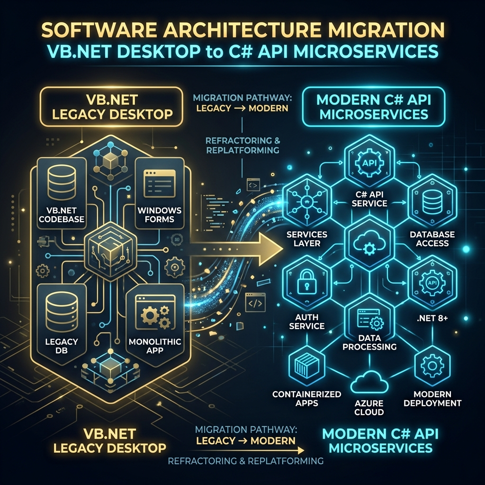
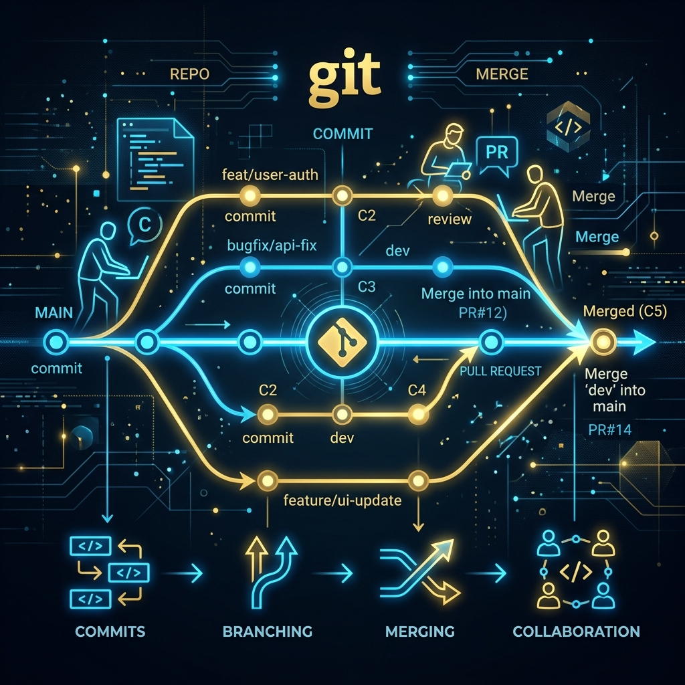
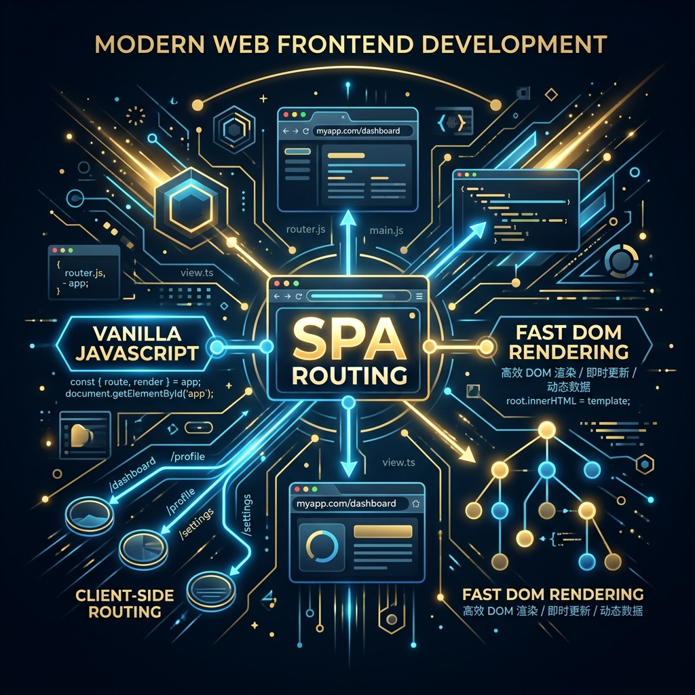

PREVIEW / 01
Optimizing T-SQL Queries: Tips from a Database Engineer
A deep dive into query plans, indexing strategies, and writing high-performance SQL scripts.
Ask me about this topic ↗NOTES / THINGS I THINK ABOUT
Topics from my original portfolio. These are article previews; full write-ups are still to come.

PREVIEW / 01
A deep dive into query plans, indexing strategies, and writing high-performance SQL scripts.
Ask me about this topic ↗PREVIEW / 02
How to resolve Gradle cache corruption issues and speed up continuous integration builds.
Ask me about this topic ↗
PREVIEW / 03
Strategies for refactoring legacy desktop modules into scalable and maintainable microservices.
Ask me about this topic ↗PREVIEW / 04
Leveraging scripting to automate database backups, service health monitoring, and system alerts.
Ask me about this topic ↗
PREVIEW / 05
Key strategies for branching models, staging clean commits, and resolving code integration merges.
Ask me about this topic ↗
PREVIEW / 06
Custom client-side routing, modular structures, and hardware-accelerated interface state transitions.
Ask me about this topic ↗